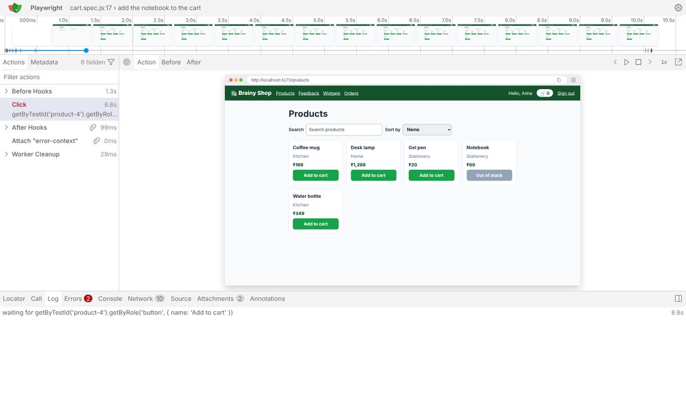
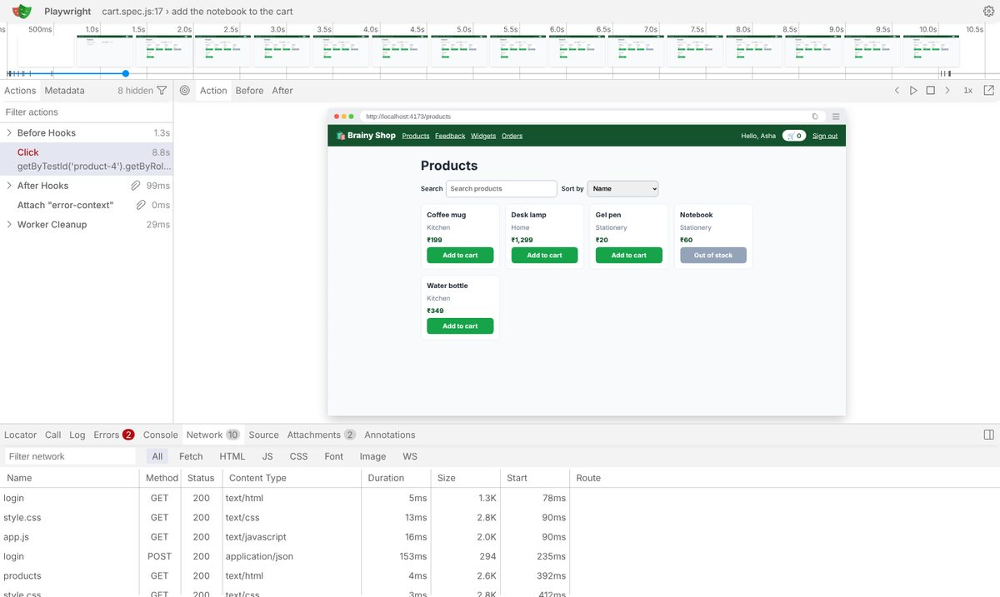
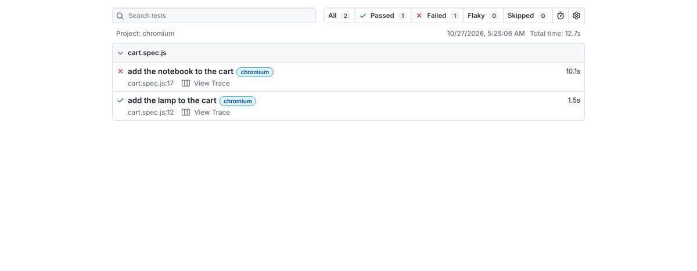
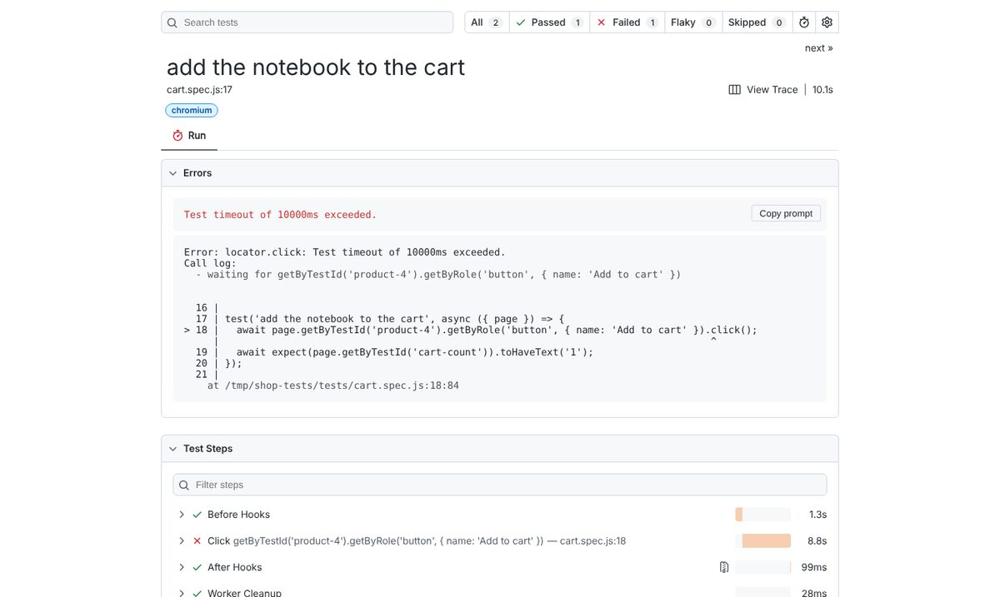
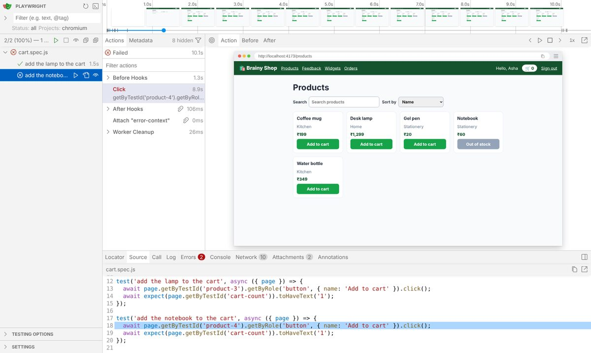
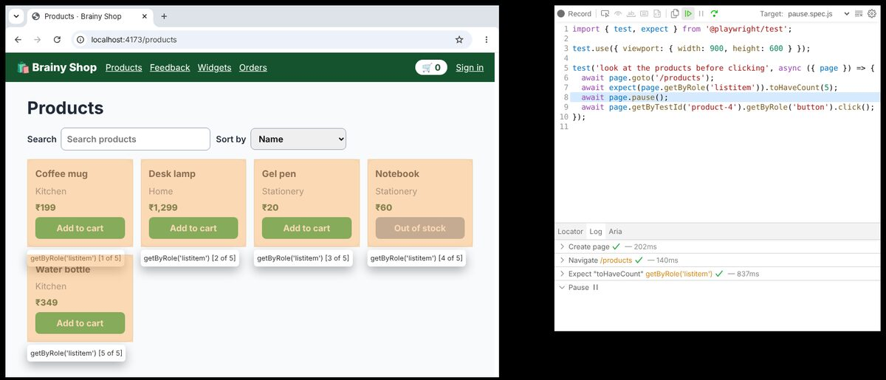

Find out why a test failed, quickly and with proof. Read the error, keep a screenshot, a video and a trace for every failure, replay the trace, and step through the test in the Inspector when you need to.
When a test fails, Playwright can show you exactly what happened: what it looked for, what it found, and a recording of the page at every step. Debugging means reading that evidence before guessing.
Most failures explain themselves. Before you open any tool, read what the runner printed. A Playwright error has four parts, and you will find them in every language.
| Part | What it tells you |
|---|---|
| the locator | which element the check or action looked for |
| expected and received | what the test wanted and what the page had, side by side |
| the timeout | how long Playwright kept trying before it gave up |
| the call log | each try: did the locator find an element, was it visible, enabled and stable, what did it contain |
package com.brainy; import com.microsoft.playwright.Page; import com.microsoft.playwright.junit.UsePlaywright; import com.microsoft.playwright.options.AriaRole; import org.junit.jupiter.api.Test; import static com.microsoft.playwright.assertions.PlaywrightAssertions.assertThat; @UsePlaywright(ShopOptions.class) public class GreetingTest { @Test void greetsAshaAfterSignIn(Page page) { page.navigate("/login"); page.getByLabel("Email").fill("asha@shop.example"); page.getByLabel("Password").fill("s3cret"); page.getByRole(AriaRole.BUTTON, new Page.GetByRoleOptions().setName("Sign in")).click(); assertThat(page.locator("#hello")).hasText("Hello, Asha!"); // the page says Hello, Asha } }
$ mvn test
[INFO] -------------------------------------------------------
[INFO] T E S T S
[INFO] -------------------------------------------------------
[INFO] Running com.brainy.GreetingTest
[ERROR] Tests run: 1, Failures: 1, Errors: 0, Skipped: 0, Time elapsed: 8.196 s <<< FAILURE! -- in com.brainy.GreetingTest
[ERROR] com.brainy.GreetingTest.greetsAshaAfterSignIn(Page) -- Time elapsed: 8.110 s <<< FAILURE!
org.opentest4j.AssertionFailedError:
Locator expected to have text
Expected: Hello, Asha!
Received: Hello, Asha
Call log:
- Assert "hasText" locator("#hello") with timeout 5000ms
- waiting for locator("#hello")
3 × locator resolved to <span id="hello"></span>
- unexpected value ""
11 × locator resolved to <span id="hello">Hello, Asha</span>
- unexpected value "Hello, Asha"
[ERROR] Tests run: 1, Failures: 1, Errors: 0, Skipped: 0
[INFO]
[INFO] ------------------------------------------------------------------------
[INFO] BUILD FAILUREfrom playwright.sync_api import Page, expect def test_greets_asha_after_sign_in(page: Page): page.goto("/login") page.get_by_label("Email").fill("asha@shop.example") page.get_by_label("Password").fill("s3cret") page.get_by_role("button", name="Sign in").click() expect(page.locator("#hello")).to_have_text("Hello, Asha!") # the page says Hello, Asha
$ pytest -v
collecting ... collected 1 item
tests/test_greeting.py::test_greets_asha_after_sign_in[chromium] FAILED [100%]
=================================== FAILURES ===================================
___________________ test_greets_asha_after_sign_in[chromium] ___________________
page = <Page url='http://localhost:4173/products'>
def test_greets_asha_after_sign_in(page: Page):
page.goto("/login")
page.get_by_label("Email").fill("asha@shop.example")
page.get_by_label("Password").fill("s3cret")
page.get_by_role("button", name="Sign in").click()
> expect(page.locator("#hello")).to_have_text("Hello, Asha!") # the page says Hello, Asha
^^^^^^^^^^^^^^^^^^^^^^^^^^^^^^^^^^^^^^^^^^^^^^^^^^^^^^^^^^^
E AssertionError: Locator expected to have text 'Hello, Asha!'
E Actual value: Hello, Asha
E Call log:
E - Expect "to_have_text" locator("#hello") with timeout 5000ms
E - waiting for locator("#hello")
E 3 × locator resolved to <span id="hello"></span>
E - unexpected value ""
E 10 × locator resolved to <span id="hello">Hello, Asha</span>
E - unexpected value "Hello, Asha"
E
E Aria snapshot:
E - text: Hello, Asha
tests/test_greeting.py:9: AssertionError
=========================== short test summary info ============================
FAILED tests/test_greeting.py::test_greets_asha_after_sign_in[chromium] - AssertionError: Locator expected to have text 'Hello, Asha!'
============================== 1 failed in 7.14s ===============================import { test, expect } from '@playwright/test'; test('greets Asha after sign in', async ({ page }) => { await page.goto('/login'); await page.getByLabel('Email').fill('asha@shop.example'); await page.getByLabel('Password').fill('s3cret'); await page.getByRole('button', { name: 'Sign in' }).click(); await expect(page.locator('#hello')).toHaveText('Hello, Asha!'); // the page says Hello, Asha });
$ npx playwright test
Running 1 test using 1 worker
✘ 1 [chromium] › tests/greeting.spec.js:3:1 › greets Asha after sign in (5.6s)
1) [chromium] › tests/greeting.spec.js:3:1 › greets Asha after sign in ───────────────────────────
Error: expect(locator).toHaveText(expected) failed
Locator: locator('#hello')
Expected: "Hello, Asha!"
Received: "Hello, Asha"
Timeout: 5000ms
Call log:
- Expect "toHaveText" locator('#hello') with timeout 5000ms
- waiting for locator('#hello')
3 × locator resolved to <span id="hello"></span>
- unexpected value ""
11 × locator resolved to <span id="hello">Hello, Asha</span>
- unexpected value "Hello, Asha"
6 | await page.getByLabel('Password').fill('s3cret');
7 | await page.getByRole('button', { name: 'Sign in' }).click();
> 8 | await expect(page.locator('#hello')).toHaveText('Hello, Asha!'); // the page says Hello, Asha
| ^
9 | });
10 |
at tests/greeting.spec.js:8:40
Error Context: test-results/greeting-greets-Asha-after-sign-in-chromium/error-context.md
1 failed
[chromium] › tests/greeting.spec.js:3:1 › greets Asha after sign in ────────────────────────────import { test, expect } from '@playwright/test'; test('greets Asha after sign in', async ({ page }) => { await page.goto('/login'); await page.getByLabel('Email').fill('asha@shop.example'); await page.getByLabel('Password').fill('s3cret'); await page.getByRole('button', { name: 'Sign in' }).click(); await expect(page.locator('#hello')).toHaveText('Hello, Asha!'); // the page says Hello, Asha });
$ npx playwright test
Running 1 test using 1 worker
✘ 1 [chromium] › tests/greeting.spec.ts:3:1 › greets Asha after sign in (5.5s)
1) [chromium] › tests/greeting.spec.ts:3:1 › greets Asha after sign in ───────────────────────────
Error: expect(locator).toHaveText(expected) failed
Locator: locator('#hello')
Expected: "Hello, Asha!"
Received: "Hello, Asha"
Timeout: 5000ms
Call log:
- Expect "toHaveText" locator('#hello') with timeout 5000ms
- waiting for locator('#hello')
3 × locator resolved to <span id="hello"></span>
- unexpected value ""
11 × locator resolved to <span id="hello">Hello, Asha</span>
- unexpected value "Hello, Asha"
6 | await page.getByLabel('Password').fill('s3cret');
7 | await page.getByRole('button', { name: 'Sign in' }).click();
> 8 | await expect(page.locator('#hello')).toHaveText('Hello, Asha!'); // the page says Hello, Asha
| ^
9 | });
10 |
at tests/greeting.spec.ts:8:40
Error Context: test-results/greeting-greets-Asha-after-sign-in-chromium/error-context.md
1 failed
[chromium] › tests/greeting.spec.ts:3:1 › greets Asha after sign in ────────────────────────────Every runner names the same four things: the locator it checked, the text it expected, the text it received and how long it kept trying. The difference is one exclamation mark. The call log underneath shows that the check found the element straight away and retried until the 5 s limit, so the element was there and only the text was wrong. Playwright Test also prints the source line with a marker under the failing call.
| The error says | It usually means |
|---|---|
| received a different text or count | the page changed, or the expected value in the test is out of date |
| element(s) not found, or waiting for locator | the locator is wrong, a step before it did not happen, or the page did not load |
| strict mode violation, resolved to 2 elements | the locator is too loose, so narrow it with a role, a name or a parent |
| element is not enabled, or is not visible | the app has not finished something, such as loading data or validating a form |
| Test timeout of 30000ms exceeded | one call waited for something that never happened, and the call log names it |
A failure in CI happens on a machine you cannot watch. Turn on evidence so every failed test leaves behind what it saw. Keeping it only for failures saves disk space, because passing tests need none.
package com.brainy; import com.microsoft.playwright.Browser; import com.microsoft.playwright.junit.Options; import com.microsoft.playwright.junit.OptionsFactory; import java.nio.file.Paths; public class EvidenceOptions implements OptionsFactory { @Override public Options getOptions() { return new Options() .setHeadless(true) .setBaseUrl("http://localhost:4173") .setTrace(Options.Trace.RETAIN_ON_FAILURE) // keep the trace only when a test fails .setOutputDir(Paths.get("test-results")) .setContextOptions(new Browser.NewContextOptions() .setRecordVideoDir(Paths.get("videos"))); // a video of every test } }
package com.brainy; import com.microsoft.playwright.Locator; import com.microsoft.playwright.Page; import com.microsoft.playwright.junit.UsePlaywright; import com.microsoft.playwright.options.AriaRole; import org.junit.jupiter.api.BeforeEach; import org.junit.jupiter.api.Test; import static com.microsoft.playwright.assertions.PlaywrightAssertions.assertThat; @UsePlaywright(EvidenceOptions.class) public class CartTest { @BeforeEach void signIn(Page page) { page.navigate("/login"); page.getByLabel("Email").fill("asha@shop.example"); page.getByLabel("Password").fill("s3cret"); page.getByRole(AriaRole.BUTTON, new Page.GetByRoleOptions().setName("Sign in")).click(); assertThat(page.getByRole(AriaRole.LISTITEM)).hasCount(5); } @Test void addTheLampToTheCart(Page page) { page.getByTestId("product-3").getByRole(AriaRole.BUTTON, new Locator.GetByRoleOptions().setName("Add to cart")).click(); assertThat(page.getByTestId("cart-count")).hasText("1"); } @Test void addTheNotebookToTheCart(Page page) { // the Notebook is out of stock, so this button never appears page.getByTestId("product-4").getByRole(AriaRole.BUTTON, new Locator.GetByRoleOptions().setName("Add to cart")) .click(new Locator.ClickOptions().setTimeout(3000)); } }
$ mvn test ; find test-results videos -type f | sort
[INFO] -------------------------------------------------------
[INFO] T E S T S
[INFO] -------------------------------------------------------
[INFO] Running com.brainy.CartTest
[ERROR] Tests run: 2, Failures: 0, Errors: 1, Skipped: 0, Time elapsed: 8.398 s <<< FAILURE! -- in com.brainy.CartTest
[ERROR] com.brainy.CartTest.addTheNotebookToTheCart(Page) -- Time elapsed: 4.620 s <<< ERROR!
com.microsoft.playwright.TimeoutError:
Error {
message='Timeout 3000ms exceeded.
name='TimeoutError
stack='TimeoutError: Timeout 3000ms exceeded.
}
Call log:
- - waiting for getByTestId("product-4").getByRole(AriaRole.BUTTON, new Locator.GetByRoleOptions().setName("Add to cart"))
[ERROR] Tests run: 2, Failures: 0, Errors: 1, Skipped: 0
[INFO]
[INFO] ------------------------------------------------------------------------
[INFO] BUILD FAILURE
test-results/com.brainy.CartTest.addTheNotebookToTheCart-chromium/trace.zip
videos/page@de937714c18e0e6574536f58fe8819fc.webm
videos/page@f7dab86e262cfe1e6401994025f0950c.webm[pytest] addopts = --base-url http://localhost:4173 --screenshot only-on-failure --video retain-on-failure --tracing retain-on-failure
import pytest from playwright.sync_api import Page, expect @pytest.fixture(autouse=True) def signed_in(page: Page): page.goto("/login") page.get_by_label("Email").fill("asha@shop.example") page.get_by_label("Password").fill("s3cret") page.get_by_role("button", name="Sign in").click() expect(page.get_by_role("listitem")).to_have_count(5) def test_add_the_lamp_to_the_cart(page: Page): page.get_by_test_id("product-3").get_by_role("button", name="Add to cart").click() expect(page.get_by_test_id("cart-count")).to_have_text("1") def test_add_the_notebook_to_the_cart(page: Page): # the Notebook is out of stock, so this button never appears page.get_by_test_id("product-4").get_by_role("button", name="Add to cart").click(timeout=3000)
$ pytest -v ; find test-results -type f | sort
collecting ... collected 2 items
tests/test_cart.py::test_add_the_lamp_to_the_cart[chromium] PASSED [ 50%]
tests/test_cart.py::test_add_the_notebook_to_the_cart[chromium] FAILED [100%]
=================================== FAILURES ===================================
_________________ test_add_the_notebook_to_the_cart[chromium] __________________
page = <Page url='http://localhost:4173/products'>
def test_add_the_notebook_to_the_cart(page: Page):
# the Notebook is out of stock, so this button never appears
> page.get_by_test_id("product-4").get_by_role("button", name="Add to cart").click(timeout=3000)
E playwright._impl._errors.TimeoutError: Locator.click: Timeout 3000ms exceeded.
E Call log:
E - waiting for get_by_test_id("product-4").get_by_role("button", name="Add to cart")
tests/test_cart.py:21: TimeoutError
=========================== short test summary info ============================
FAILED tests/test_cart.py::test_add_the_notebook_to_the_cart[chromium] - playwright._impl._errors.TimeoutError: Locator.click: Timeout 3000ms exceeded.
========================= 1 failed, 1 passed in 7.13s ==========================
test-results/tests-test-cart-py-test-add-the-notebook-to-the-cart-chromium/test-failed-1.png
test-results/tests-test-cart-py-test-add-the-notebook-to-the-cart-chromium/trace.zip
test-results/tests-test-cart-py-test-add-the-notebook-to-the-cart-chromium/video.webmimport { defineConfig, devices } from '@playwright/test'; export default defineConfig({ testDir: './tests', reporter: 'list', use: { baseURL: 'http://localhost:4173', screenshot: 'only-on-failure', // a picture of the page when a test fails video: 'retain-on-failure', // a video of every test, kept only when it fails trace: 'retain-on-failure', // a trace of every test, kept only when it fails }, projects: [{ name: 'chromium', use: { ...devices['Desktop Chrome'] } }], });
import { test, expect } from '@playwright/test'; test.beforeEach(async ({ page }) => { await page.goto('/login'); await page.getByLabel('Email').fill('asha@shop.example'); await page.getByLabel('Password').fill('s3cret'); await page.getByRole('button', { name: 'Sign in' }).click(); await expect(page.getByRole('listitem')).toHaveCount(5); }); test('add the lamp to the cart', async ({ page }) => { await page.getByTestId('product-3').getByRole('button', { name: 'Add to cart' }).click(); await expect(page.getByTestId('cart-count')).toHaveText('1'); }); test('add the notebook to the cart', async ({ page }) => { // the Notebook is out of stock, so this button never appears await page.getByTestId('product-4').getByRole('button', { name: 'Add to cart' }).click({ timeout: 3000 }); });
$ npx playwright test ; find test-results -type f | sort
Running 2 tests using 1 worker
✓ 1 [chromium] › tests/cart.spec.js:11:1 › add the lamp to the cart (1.6s)
✘ 2 [chromium] › tests/cart.spec.js:16:1 › add the notebook to the cart (4.7s)
1) [chromium] › tests/cart.spec.js:16:1 › add the notebook to the cart ───────────────────────────
TimeoutError: locator.click: Timeout 3000ms exceeded.
Call log:
- waiting for getByTestId('product-4').getByRole('button', { name: 'Add to cart' })
16 | test('add the notebook to the cart', async ({ page }) => {
17 | // the Notebook is out of stock, so this button never appears
> 18 | await page.getByTestId('product-4').getByRole('button', { name: 'Add to cart' }).click({ timeout: 3000 });
| ^
19 | });
20 |
at tests/cart.spec.js:18:84
attachment #1: screenshot (image/png) ──────────────────────────────────────────────────────────
test-results/cart-add-the-notebook-to-the-cart-chromium/test-failed-1.png
────────────────────────────────────────────────────────────────────────────────────────────────
attachment #2: video (video/webm) ──────────────────────────────────────────────────────────────
test-results/cart-add-the-notebook-to-the-cart-chromium/video.webm
────────────────────────────────────────────────────────────────────────────────────────────────
Error Context: test-results/cart-add-the-notebook-to-the-cart-chromium/error-context.md
attachment #4: trace (application/zip) ─────────────────────────────────────────────────────────
test-results/cart-add-the-notebook-to-the-cart-chromium/trace.zip
Usage:
npx playwright show-trace test-results/cart-add-the-notebook-to-the-cart-chromium/trace.zip
────────────────────────────────────────────────────────────────────────────────────────────────
1 failed
[chromium] › tests/cart.spec.js:16:1 › add the notebook to the cart ────────────────────────────
1 passed (8.3s)
test-results/.last-run.json
test-results/cart-add-the-notebook-to-the-cart-chromium/error-context.md
test-results/cart-add-the-notebook-to-the-cart-chromium/test-failed-1.png
test-results/cart-add-the-notebook-to-the-cart-chromium/trace.zip
test-results/cart-add-the-notebook-to-the-cart-chromium/video.webmimport { defineConfig, devices } from '@playwright/test'; export default defineConfig({ testDir: './tests', reporter: 'list', use: { baseURL: 'http://localhost:4173', screenshot: 'only-on-failure', // a picture of the page when a test fails video: 'retain-on-failure', // a video of every test, kept only when it fails trace: 'retain-on-failure', // a trace of every test, kept only when it fails }, projects: [{ name: 'chromium', use: { ...devices['Desktop Chrome'] } }], });
import { test, expect } from '@playwright/test'; test.beforeEach(async ({ page }) => { await page.goto('/login'); await page.getByLabel('Email').fill('asha@shop.example'); await page.getByLabel('Password').fill('s3cret'); await page.getByRole('button', { name: 'Sign in' }).click(); await expect(page.getByRole('listitem')).toHaveCount(5); }); test('add the lamp to the cart', async ({ page }) => { await page.getByTestId('product-3').getByRole('button', { name: 'Add to cart' }).click(); await expect(page.getByTestId('cart-count')).toHaveText('1'); }); test('add the notebook to the cart', async ({ page }) => { // the Notebook is out of stock, so this button never appears await page.getByTestId('product-4').getByRole('button', { name: 'Add to cart' }).click({ timeout: 3000 }); });
$ npx playwright test ; find test-results -type f | sort
Running 2 tests using 1 worker
✓ 1 [chromium] › tests/cart.spec.ts:11:1 › add the lamp to the cart (1.7s)
✘ 2 [chromium] › tests/cart.spec.ts:16:1 › add the notebook to the cart (4.7s)
1) [chromium] › tests/cart.spec.ts:16:1 › add the notebook to the cart ───────────────────────────
TimeoutError: locator.click: Timeout 3000ms exceeded.
Call log:
- waiting for getByTestId('product-4').getByRole('button', { name: 'Add to cart' })
16 | test('add the notebook to the cart', async ({ page }) => {
17 | // the Notebook is out of stock, so this button never appears
> 18 | await page.getByTestId('product-4').getByRole('button', { name: 'Add to cart' }).click({ timeout: 3000 });
| ^
19 | });
20 |
at tests/cart.spec.ts:18:84
attachment #1: screenshot (image/png) ──────────────────────────────────────────────────────────
test-results/cart-add-the-notebook-to-the-cart-chromium/test-failed-1.png
────────────────────────────────────────────────────────────────────────────────────────────────
attachment #2: video (video/webm) ──────────────────────────────────────────────────────────────
test-results/cart-add-the-notebook-to-the-cart-chromium/video.webm
────────────────────────────────────────────────────────────────────────────────────────────────
Error Context: test-results/cart-add-the-notebook-to-the-cart-chromium/error-context.md
attachment #4: trace (application/zip) ─────────────────────────────────────────────────────────
test-results/cart-add-the-notebook-to-the-cart-chromium/trace.zip
Usage:
npx playwright show-trace test-results/cart-add-the-notebook-to-the-cart-chromium/trace.zip
────────────────────────────────────────────────────────────────────────────────────────────────
1 failed
[chromium] › tests/cart.spec.ts:16:1 › add the notebook to the cart ────────────────────────────
1 passed (7.7s)
test-results/.last-run.json
test-results/cart-add-the-notebook-to-the-cart-chromium/error-context.md
test-results/cart-add-the-notebook-to-the-cart-chromium/test-failed-1.png
test-results/cart-add-the-notebook-to-the-cart-chromium/trace.zip
test-results/cart-add-the-notebook-to-the-cart-chromium/video.webmThe lamp test passed and left nothing behind. The notebook test failed, and its folder holds the evidence: a screenshot of the page at the moment of failure, a video of the whole test and a trace.zip to open in the trace viewer. pytest-playwright has the same three options as command line flags, so they sit in pytest.ini. The JUnit fixture keeps traces with setTrace, and records a video of every test, passed or failed, into the folder set by setRecordVideoDir. It has no screenshot on failure option.
| Setting | Playwright Test | pytest-playwright | JUnit fixture |
|---|---|---|---|
| screenshot | screenshot: 'only-on-failure' | --screenshot only-on-failure | not built in, call page.screenshot() yourself |
| video | video: 'retain-on-failure' | --video retain-on-failure | setRecordVideoDir(...), every test |
| trace | trace: 'retain-on-failure' | --tracing retain-on-failure | setTrace(Options.Trace.RETAIN_ON_FAILURE) |
| where | test-results/ | test-results/ | setOutputDir(...) |
| other values | 'on', 'off', 'on-first-retry', 'retain-on-first-failure' | on, off | ON, OFF |
A trace is a zip file with everything that happened in one test: each action, a copy of the page before and after it, the network calls, the console messages and the test source. The trace viewer plays it back. These screenshots come from the notebook test above.


| Open a trace | Command |
|---|---|
| JavaScript and TypeScript | npx playwright show-trace test-results/.../trace.zip |
| Python | playwright show-trace test-results/.../trace.zip |
| Java | mvn exec:java -e -D exec.mainClass=com.microsoft.playwright.CLI -D exec.args="show-trace trace.zip" |
| any language, no install | drag the file onto trace.playwright.dev, which reads it in your browser |
package com.brainy; import com.microsoft.playwright.BrowserContext; import com.microsoft.playwright.Locator; import com.microsoft.playwright.Page; import com.microsoft.playwright.Tracing; import com.microsoft.playwright.junit.UsePlaywright; import com.microsoft.playwright.options.AriaRole; import org.junit.jupiter.api.Test; import java.nio.file.Paths; import static com.microsoft.playwright.assertions.PlaywrightAssertions.assertThat; @UsePlaywright(ShopOptions.class) public class MugTest { @Test void buyAMug(BrowserContext context, Page page) { context.tracing().start(new Tracing.StartOptions().setScreenshots(true).setSnapshots(true)); context.tracing().group("sign in"); page.navigate("/login"); page.getByLabel("Email").fill("asha@shop.example"); page.getByLabel("Password").fill("s3cret"); page.getByRole(AriaRole.BUTTON, new Page.GetByRoleOptions().setName("Sign in")).click(); assertThat(page.locator("#hello")).hasText("Hello, Asha"); context.tracing().groupEnd(); context.tracing().group("add the mug"); page.getByTestId("product-2").getByRole(AriaRole.BUTTON, new Locator.GetByRoleOptions().setName("Add to cart")).click(); assertThat(page.getByTestId("cart-count")).hasText("1"); context.tracing().groupEnd(); context.tracing().stop(new Tracing.StopOptions().setPath(Paths.get("traces/buy-a-mug.zip"))); } }
$ mvn test && ls traces
[INFO] ------------------------------------------------------- [INFO] T E S T S [INFO] ------------------------------------------------------- [INFO] Running com.brainy.MugTest [INFO] Tests run: 1, Failures: 0, Errors: 0, Skipped: 0, Time elapsed: 3.536 s -- in com.brainy.MugTest [INFO] [INFO] Results: [INFO] [INFO] Tests run: 1, Failures: 0, Errors: 0, Skipped: 0 [INFO] [INFO] ------------------------------------------------------------------------ [INFO] BUILD SUCCESS buy-a-mug.zip
from playwright.sync_api import BrowserContext, Page, expect def test_buy_a_mug(context: BrowserContext, page: Page): context.tracing.start(screenshots=True, snapshots=True, sources=True) context.tracing.group("sign in") page.goto("/login") page.get_by_label("Email").fill("asha@shop.example") page.get_by_label("Password").fill("s3cret") page.get_by_role("button", name="Sign in").click() expect(page.locator("#hello")).to_have_text("Hello, Asha") context.tracing.group_end() context.tracing.group("add the mug") page.get_by_test_id("product-2").get_by_role("button", name="Add to cart").click() expect(page.get_by_test_id("cart-count")).to_have_text("1") context.tracing.group_end() context.tracing.stop(path="traces/buy-a-mug.zip")
$ pytest -v && ls traces
collecting ... collected 1 item tests/test_mug.py::test_buy_a_mug[chromium] PASSED [100%] ============================== 1 passed in 2.58s =============================== buy-a-mug.zip
import { test, expect } from '@playwright/test'; test('buy a mug', async ({ page }) => { await test.step('sign in', async () => { await page.goto('/login'); await page.getByLabel('Email').fill('asha@shop.example'); await page.getByLabel('Password').fill('s3cret'); await page.getByRole('button', { name: 'Sign in' }).click(); await expect(page.locator('#hello')).toHaveText('Hello, Asha'); }); await test.step('add the mug', async () => { await page.getByTestId('product-2').getByRole('button', { name: 'Add to cart' }).click(); await expect(page.getByTestId('cart-count')).toHaveText('1'); }); });
$ npx playwright test && find test-results -name trace.zip
Running 1 test using 1 worker ✓ 1 [chromium] › tests/mug.spec.js:3:1 › buy a mug (1.6s) 1 passed (2.6s) test-results/mug-buy-a-mug-chromium/trace.zip
import { test, expect } from '@playwright/test'; test('buy a mug', async ({ page }) => { await test.step('sign in', async () => { await page.goto('/login'); await page.getByLabel('Email').fill('asha@shop.example'); await page.getByLabel('Password').fill('s3cret'); await page.getByRole('button', { name: 'Sign in' }).click(); await expect(page.locator('#hello')).toHaveText('Hello, Asha'); }); await test.step('add the mug', async () => { await page.getByTestId('product-2').getByRole('button', { name: 'Add to cart' }).click(); await expect(page.getByTestId('cart-count')).toHaveText('1'); }); });
$ npx playwright test && find test-results -name trace.zip
Running 1 test using 1 worker ✓ 1 [chromium] › tests/mug.spec.ts:3:1 › buy a mug (1.5s) 1 passed (2.6s) test-results/mug-buy-a-mug-chromium/trace.zip
Each language saved a trace in which the actions sit under two names, sign in and add the mug, so a long test reads like a short list. Playwright Test does this with test.step, and the same steps also show up in the HTML report. In Python and Java the test starts and stops the trace itself with context.tracing, and tracing.group names the steps. Open any of the files with show-trace.
Playwright Test writes an HTML report with every test, its steps, its errors and its evidence. It opens by itself after a failed local run, and npx playwright show-report opens it any time.


UI mode is a window for running and watching tests. You pick tests from a tree, run them, and step through each action with the same views as the trace viewer. It can also rerun tests when you save a file. Start it with npx playwright test --ui.

When the evidence is not enough, run the test yourself and stop it at the line that fails. In debug mode Playwright opens a real browser and the Inspector, which shows the test source, highlights the current line and lets you step one action at a time. Debug mode also turns off timeouts, so you can take as long as you need.

| JavaScript and TypeScript | Python | Java | |
|---|---|---|---|
| open the Inspector | npx playwright test --debug | PWDEBUG=1 pytest -s | PWDEBUG=1 mvn test |
| one test only | npx playwright test cart.spec.ts:12 --debug | PWDEBUG=1 pytest -s -k notebook | PWDEBUG=1 mvn test -Dtest=CartTest#addTheNotebookToTheCart |
| stop at a line | await page.pause() | page.pause() | page.pause() |
| see the source | shown by itself | shown by itself | PLAYWRIGHT_JAVA_SRC=src/test/java |
| watch slowly | launchOptions: { slowMo: 500 } | --headed --slowmo 500 | setLaunchOptions(...setSlowMo(500)) |
Next to the toolbar is the locator field. Type a locator there and the matching elements light up in the browser, which is the quickest way to fix a locator that finds nothing or finds too much.
On a CI machine there is no window to open. The DEBUG environment variable makes Playwright print what every call does, in any language, so the CI log shows the last thing a stuck test was doing.
package com.brainy; import com.microsoft.playwright.Page; import com.microsoft.playwright.junit.UsePlaywright; import com.microsoft.playwright.options.AriaRole; import org.junit.jupiter.api.Test; import static com.microsoft.playwright.assertions.PlaywrightAssertions.assertThat; @UsePlaywright(ShopOptions.class) public class LampTest { @Test void findTheLamp(Page page) { page.navigate("/products"); page.getByPlaceholder("Search products").fill("lamp"); assertThat(page.getByRole(AriaRole.LISTITEM)).hasCount(1); } }
$ DEBUG=pw:api mvn test
[INFO] -------------------------------------------------------
[INFO] T E S T S
[INFO] -------------------------------------------------------
[INFO] Running com.brainy.LampTest
pw:api navigating to "http://localhost:4173/products", waiting until "load"
pw:api locator resolved to <input id="q" type="search" placeholder="Search products"/>
pw:api fill("lamp")
pw:api attempting fill action
pw:api Assert "hasCount" getByRole(AriaRole.LISTITEM) with timeout 5000ms
[INFO] Tests run: 1, Failures: 0, Errors: 0, Skipped: 0, Time elapsed: 3.142 s -- in com.brainy.LampTest
[INFO]
[INFO] Results:
[INFO]
[INFO] Tests run: 1, Failures: 0, Errors: 0, Skipped: 0
[INFO]
[INFO] ------------------------------------------------------------------------
[INFO] BUILD SUCCESSfrom playwright.sync_api import Page, expect def test_find_the_lamp(page: Page): page.goto("/products") page.get_by_placeholder("Search products").fill("lamp") expect(page.get_by_role("listitem")).to_have_count(1)
$ DEBUG=pw:api pytest -s
collected 1 item
tests/test_lamp.py pw:api navigating to "http://localhost:4173/products", waiting until "load"
pw:api locator resolved to <input id="q" type="search" placeholder="Search products"/>
pw:api fill("lamp")
pw:api attempting fill action
pw:api Expect "to_have_count" get_by_role("listitem") with timeout 5000ms
.
============================== 1 passed in 0.98s ===============================import { test, expect } from '@playwright/test'; test('find the lamp', async ({ page }) => { await page.goto('/products'); await page.getByPlaceholder('Search products').fill('lamp'); await expect(page.getByRole('listitem')).toHaveCount(1); });
$ DEBUG=pw:api npx playwright test
Running 1 test using 1 worker
pw:api <= browserType.launch succeeded +133ms
pw:api <= browser.newContext succeeded +21ms
pw:api <= browserContext.newPage succeeded +62ms
pw:api navigating to "http://localhost:4173/products", waiting until "load" +2ms
pw:api <= page.goto succeeded +1ms
pw:api locator resolved to <input id="q" type="search" placeholder="Search products"/> +54ms
pw:api fill("lamp") +10ms
pw:api attempting fill action +0ms
pw:api <= locator.fill succeeded +12ms
pw:api Expect "toHaveCount" getByRole('listitem') with timeout 5000ms +2ms
pw:api <= Expect "toHaveCount" succeeded +18ms
pw:api <= browserContext.close succeeded +18ms
✓ 1 [chromium] › tests/lamp.spec.js:3:1 › find the lamp (418ms)
pw:api <= browser.close succeeded +37ms
1 passed (2.1s)import { test, expect } from '@playwright/test'; test('find the lamp', async ({ page }) => { await page.goto('/products'); await page.getByPlaceholder('Search products').fill('lamp'); await expect(page.getByRole('listitem')).toHaveCount(1); });
$ DEBUG=pw:api npx playwright test
Running 1 test using 1 worker
pw:api <= browserType.launch succeeded +124ms
pw:api <= browser.newContext succeeded +26ms
pw:api <= browserContext.newPage succeeded +68ms
pw:api navigating to "http://localhost:4173/products", waiting until "load" +6ms
pw:api <= page.goto succeeded +1ms
pw:api locator resolved to <input id="q" type="search" placeholder="Search products"/> +41ms
pw:api fill("lamp") +6ms
pw:api attempting fill action +1ms
pw:api <= locator.fill succeeded +11ms
pw:api Expect "toHaveCount" getByRole('listitem') with timeout 5000ms +3ms
pw:api <= Expect "toHaveCount" succeeded +4ms
pw:api <= browserContext.close succeeded +13ms
✓ 1 [chromium] › tests/lamp.spec.ts:3:1 › find the lamp (380ms)
pw:api <= browser.close succeeded +43ms
1 passed (1.8s)With DEBUG=pw:api, Playwright writes a line for each step inside every call: the navigation, the element a locator found, the fill and the check. In JavaScript and TypeScript the client adds a line when each call ends, with the time since the line before, so you can see where the test spent its time. Python and Java run the same driver, so they print the same steps. The full log also has a line for every wait inside a call, which we cut here to keep it short.
| Variable | What it prints |
|---|---|
| DEBUG=pw:api | every Playwright call and the steps inside it |
| DEBUG=pw:browser | what the browser process prints, useful when it will not start |
| DEBUG=pw:protocol | every message between Playwright and the browser, very long |
| PWDEBUG=console | a playwright object in the browser DevTools, to try locators in the console |
📖 Every API, option and command on this page was checked against the official Playwright documentation and release notes (version 1.64, October 2026). Every example was run with Playwright 1.63 in Chromium when the page was built, and the output shown is what it printed.